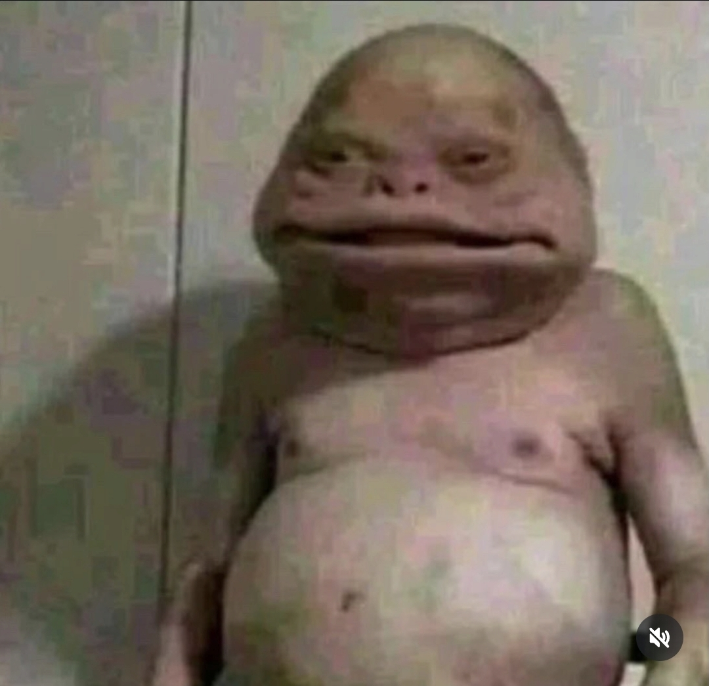
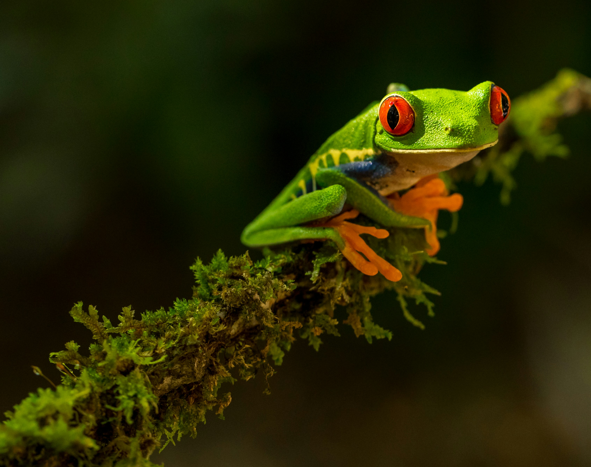
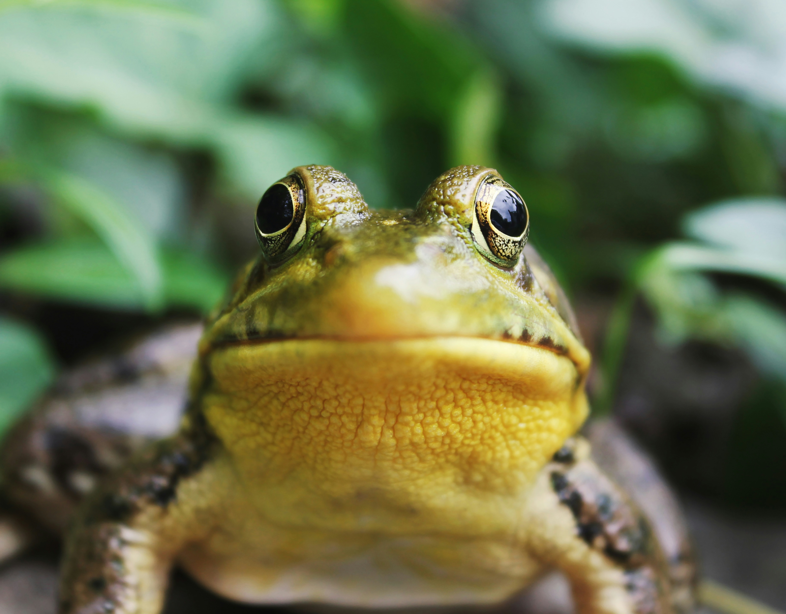
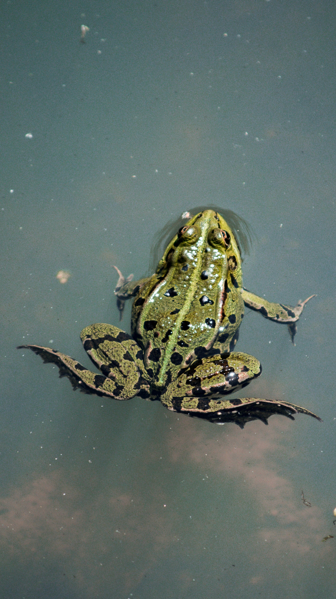

This website is determinated to bobr.
this website has some subtext that goes here under the main title. its a smaller font and the color is lower contrast.


BOBR WHEN HE IS YOUNG
This when bobr was 5ish years old, slain his first a few flies.little hero bobr earned his name

BOBR WHEN HE IS A TEENAGER
This is when bobr is a teenager, he got his permit to wonder out freely. met with his first love, bobrrina.

BOBR WHEN HE IS AN ADULT
This is when bobr is and adult, soon he is about to face death. luckly he transforms his mind to his new demi human/frog body.
From the murky depths of the ancient swamp, I rose. Not as a mere creature, but as a force of nature. I have slain flies before they knew fear existed. I have loved Bobrrina under the moonlight of a thousand marshes. I have faced death and laughed, for death itself was afraid to take me. I am not just a bobr. I am THE bobr. And the swamp shall remember my name for eternity.
WAIT NO MORE! BE A BOBR
In order to be a new bobr dont forgot to sign up.